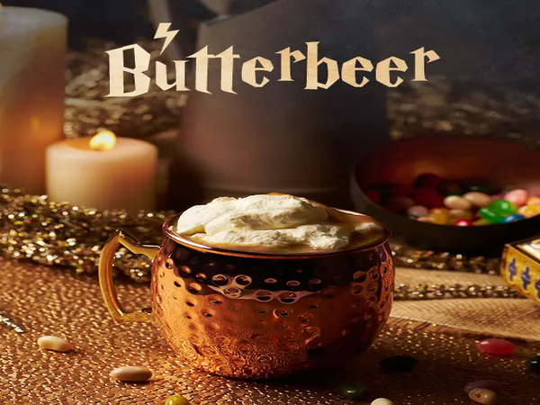

Recipe for Butterbeer
This recipe for Harry Potter Butterbeer tastes just
like what they sell at the Wizarding World of Harry Potter. A no-cook method that is SO easy!
EQUIPMENT
INGRIDIENTS
- 2 liters cream soda chilled
- 1/4 teaspoon caramel extract
- 1/4 teaspoon butter extract
For the cream topping:
- 1 cup heavy whipping cream
- 1/2 cup butterscotch topping
- 1/4 cup powdered sugar
INSTRUCTIONS
- In large mixing bowl, whip heavy cream until it forms stiff peaks.
- Add butterscotch topping and powdered sugar.
- Mix the caramel and butter extracts with the cream soda and then pour the mixture into clear cups or mugs.
- Top with butterscotch cream topping and enjoy!